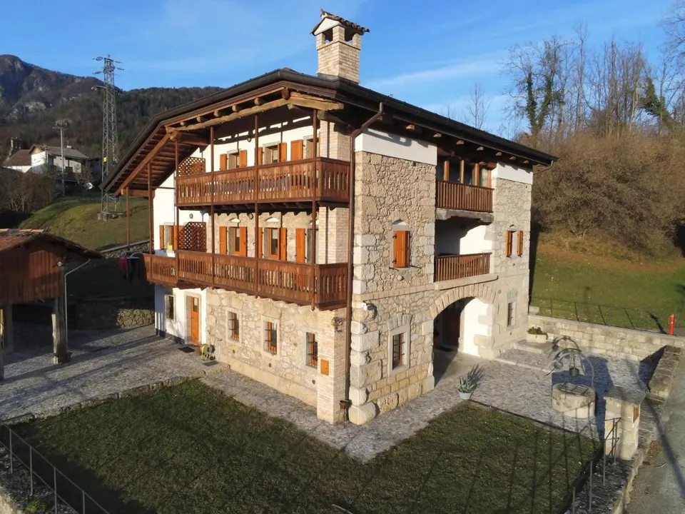
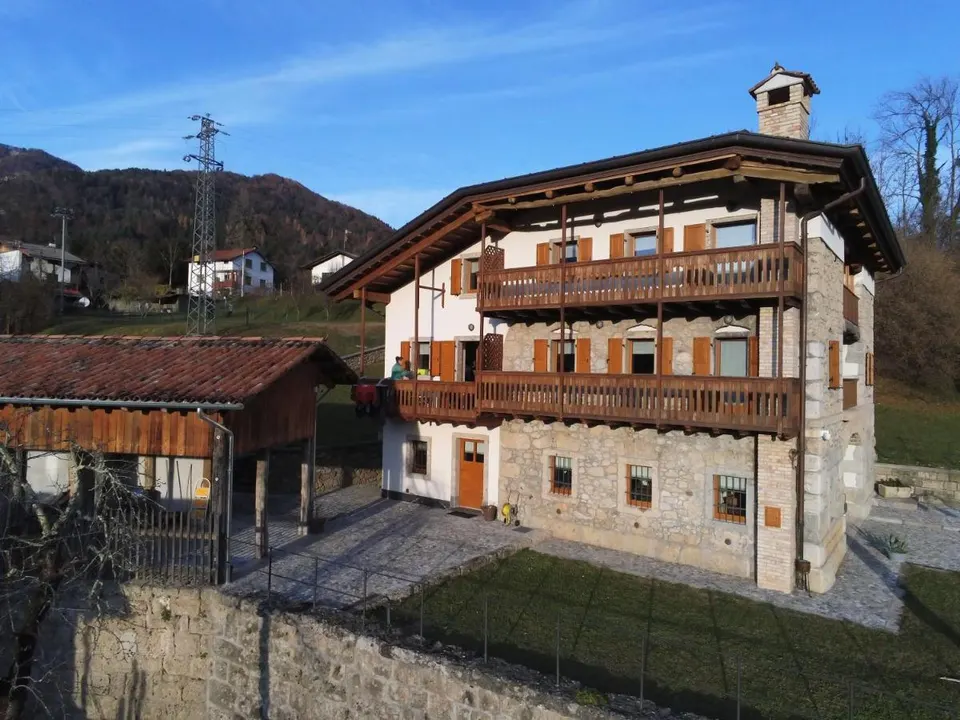

Bed & Breakfast a Lungis · CarniaLa Farie. Sentirsi a casa.
Una casa tipica carnica ristrutturata nel borgo di Lungis, con camere con terrazza o balcone, giardino e la quiete delle montagne. Gestita dall'Albergo Diffuso Socchieve.

Una casa carnica, la quiete di Lungis.
La Farie è un bed & breakfast ricavato in una casa tipica carnica ristrutturata, nel borgo di Lungis, a 554 metri di quota: quiete, vista sulle montagne e il ritmo lento di un paese vero.
Le camere hanno terrazza o balcone, bagno privato con bidet, asciugacapelli e pantofole, TV a schermo piatto e Wi-Fi gratuito. La casa ha un giardino, una sala comune e il parcheggio privato gratuito.
Da oggi La Farie è gestita direttamente dall'Albergo Diffuso Socchieve “Col Gentile”: stessa casa, stessa quiete, con la reception di Mediis a due passi per informazioni, consigli su sentieri e itinerari e per qualsiasi necessità durante il soggiorno.
28 foto de La Farie
Tutto quello che serve.
- Colazione italiana o à la carte
- Wi-Fi gratuito
- Parcheggio privato gratuito
- Terrazza o balcone
- Bagno privato
- TV a schermo piatto
- Giardino
- Sala comune
- Bollitore
- Camere non fumatori
Prima di arrivare.
A Lungis, nella Carnia più vera.
Via Vincenzo Bellini, frazione di Lungis, comune di Socchieve (UD), a 554 metri di quota. A due passi l'agriturismo In Già, il bar alimentari Al Cervo e i sentieri dell'Anello delle Frazioni.
- Terme di Arta25 km
- Foro Romano di Zuglio23 km
- Sauris18 km
- Aeroporto di Trieste105 km
Il tuo B&B in Carnia.
Scrivici le date e il numero di ospiti: ti rispondiamo con disponibilità e prezzi.
Scrivi a La Farie.
Il messaggio sarà identificato come richiesta per La Farie e non per gli appartamenti Col Gentile.
I campi contrassegnati con * sono obbligatori. La richiesta non costituisce una prenotazione.